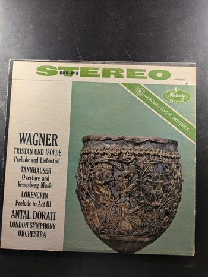
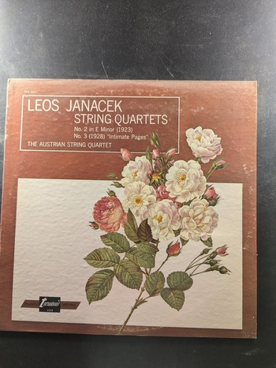

Tristan und Isolde / Tannhäuser / Lohengrin
Wagner, Antal Dorati, London Symphony Orchestra
Mercury Records SR90234
Two Twentieth Century Masterpieces: Barber/Hindemith Violin Concertos
Isaac Stern, Leonard Bernstein, New York Philharmonic
Columbia ML 6119
Adagio for Strings and Organ
Tomaso Albinoni
Nonesuch H-71065
Four Sacred Pieces
Verdi
London ffrr OS 26176
Symphony No. 2
Sibelius, London Philharmonic Orchestra
Vox STPL 513.210
Rigoletto (Excerpts)
Verdi
Vox STPL 518.120
String Quartets
Leos Janacek
Vox TV-S 34421
Peter and the Wolf / Young Person's Guide to the Orchestra
Prokofiev / Britten
VOX STPL 525.600
Scotch Symphony / Italian Symphony
Mendelssohn
London CS 6587
Anvil Chorus
The Mormon Tabernacle Choir
Columbia Masterworks MS 6861
Prelude & Good Friday Spell from 'Parsifal', Siegfried Idyll, Prelude to 'Die Meistersinger'
William Steinberg conducts Wagner
Seraphim S-60016
Eavesdropper
Jackie Daly & Kevin Burke

The Chieftains in China
The Chieftains
Bonaparte's Retreat
The Chieftains
Glackin
Paddy Glackin
Gael-Linn
Avenging & Bright
Charles Guard
Melodic Clawhammer Banjo
Andy Cahan, Bob Carlin, Dana Loomis, Ken Perlman, Henry Sapoznik
KM 209
Twisted Laurel
The Red Clay Ramblers
An Fhidil - Srath II
Kevin Burke, Séamus Creagh, Seán Keane, Paddy Glackin
Gael-Linn CEF 058
An Fhidil - Srath I
Séamus Glackin, Martin Hayes, Maurice Lennon, Seán Montgomery, Séamus Thompson
Gael-Linn
Thoughts from Another World
John Cunningham
A Collection of Mountain Blues
Various Artists
County 511
{kind=link}
{kind=link}
{kind=link}
{kind=link}
{kind=link}
{kind=link}
{kind=link}
{kind=link}
{kind=link}
{kind=link}
{kind=link}
{kind=link}

{kind=link}
{kind=link}
{kind=link}
{kind=link}
{kind=link}
{kind=link}
{kind=link}
{kind=link}
{kind=link}
{kind=link}
{kind=link}
{kind=link}